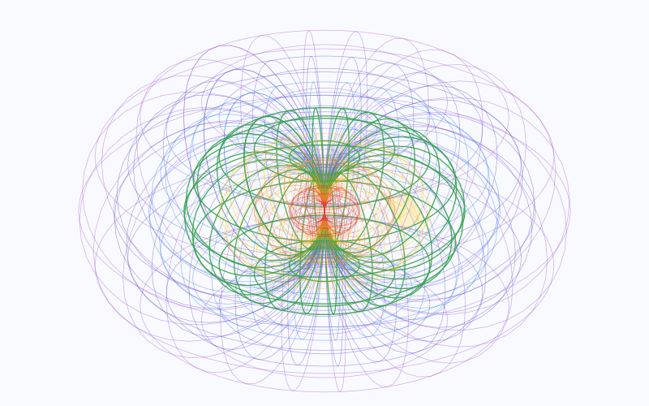

The original reading · Luke Nathan Hayes · 27 October 2026
Aura of Intelligence for Tourism and Domestic Travel
Developing the qualified self through travel and personal intelligence
Luke Nathan Hayes | 27 October 2026
Australia has less than six years before Brisbane 2032. Artificial intelligence (AI) is changing how people learn, work and make decisions. The prospect of superintelligence (SI), with capabilities beyond humans across many fields, raises the stakes further. The challenge is to give people a fair go through a global transition, with the understanding and practical means to shape their own lives. [R30]
The starting point is already in our pockets. A survey commissioned by the Australian Competition and Consumer Commission found that 94% of Australians aged 14 and older had a smartphone for personal use in October-November 2024. Cameras, microphones and sensors bring computing into everyday encounters, while wearables and increasingly connected places extend the possibilities. [R27, R29]
Aura of Intelligence is my proposal for developing the qualified self: understanding ourselves through our own explanations, values, relationships and experience, with measurements adding context. Tourism gives that relationship an enjoyable setting. Music, sport, culture and nature offer ways to discover more about ourselves while engaging with the world.
A personal Aura that grows through life
Onboarding records a minimum viable self, the starting representation from which a digital twin of selected aspects of body, mind and life develops. Reflection and correction give observations meaning. Just-in-time learning brings useful guidance into the moment a question, challenge or opportunity arises. [P1-P2]

Self-sovereign data is foundational: people own their data and digital twins. They choose where records live, who uses them and what they take with them between services. Businesses earn through useful services people choose. This ownership and practical control guide the system being developed. [P1]
A Protopian gambit for a fair go
Australia's world-first social media minimum-age rules took effect in December 2025. That willingness to shape digital life gives us a reason to pursue an equally purposeful positive ambition. [R28]
My proposal is a Protopian gambit: a considered bet on Joyful Responsible Abundance, taking measured risks and improving through what we learn. It seeks enjoyment, care for consequences and wider access to useful capability. The years ahead give us time to begin, test honestly and build on what proves worthwhile. [P6]
I'm Luke Nathan Hayes, the developer of Aura of Intelligence. This domestic proposal begins on North Stradbroke Island, known as Straddie, and widens through Redlands, Brisbane, Queensland and Australia. It invites visitors, operators, volunteers, tourism bodies and public agencies to help shape that development.
The qualified self within an increasingly connected world
A phone already accompanies its owner through changing surroundings. A watch may add movement and pulse observations, while a camera captures a chosen view or a microphone records a reflection. AI brings new ways to work with those inputs, such as discussing an image or connecting an account with earlier experience. The qualified self develops as the person explains what those observations mean in their life. [R29, R31, R34]
Body mind and environment in the same encounter
Quantified self refers to observations expressed through measurements, such as steps, movement or heart rate. In this proposal those measurements join the person's own account: what they were attempting, feeling, learning and choosing. The source, time and conditions remain visible. An AI interpretation is returned for correction, with uncertainty kept alongside it.
Someone learning a sport might retain a short movement recording and an instructor's feedback. A visitor at a gig might describe how the music, company and setting changed their mood. A quiet walk may reveal what restores their attention. These are different kinds of evidence about a lived experience, with different meanings and permissions.
Extended reality brings information into places
Extended reality, shortened to XR, includes digital experiences layered into a view of the physical world or explored in an immersive environment. A phone or suitable glasses might show a host's authorised story at a location, while a headset offers a way to revisit an earlier place. Google's Android XR work illustrates the industry direction of AI using camera and microphone context through glasses and headsets. Particular products and Aura connections need their own implementation. [R31]
The opportunity is more fluent interaction between a person, their developing Aura and the world around them. A list, voice conversation or ordinary screen remains useful where it fits. Equipment follows the experience someone wants, with each data use understandable.
Smart places are already emerging
Smart city infrastructure uses connected devices and data to manage places and services. Queensland's smart pedestrian crossings adjust timing to detected movement. Redland City Council is trialling asset monitoring sensors at Cleveland Point. These are existing examples with specific purposes and operators. [R32-R33]
Future Aura trials would explore appropriate connections with published or agreed place information, such as service changes, access features and environmental conditions. City sensors do not automatically provide a public data feed or access to personal records. Each connection identifies its source, permission and purpose. With less than six years before 2032, early trials offer a way to learn now and improve through real visits and local feedback.
The experience Aura is being built to support
Aura is being developed as a continuing personal environment across devices, activities and stages of life. Tourism gives that work a lively setting: the person learns through encounters, the Aura develops a more faithful account of them, and hosts gain a clearer way to discuss an experience. The qualified self grows through this relationship. [P1-P2]
A working beginning within a larger direction
Aura Matrix Studio is the current public browser application. It includes editable personal collections covering people, interests, skills, goals, memories and travel. Experimental views explore relationships between records and places. Some screens remain placeholders; secure integration, personal model training and dependable action across services remain development work. [P2]
What matters to you
Prepared fictional Matrix Studio sample
- Title
- Useful curiosity
- Category
- Value
- What resonates
- I want to understand this activity and hear another person’s explanation.
- Title
- Exploring a place with time to notice
- Category
- Experience
- What resonates
- A journey question connects the place, a chosen interest and the group’s available time.
- Title
- The Unhurried Journey Notebook (fictional)
- Category
- Book
- What resonates
- A fictional notebook that keeps day-trip planning note linked to context, sources and corrections.
Those working parts support a first introduction to organising a life account. A tourism trial would then develop the connection between that account, chosen observations and real activities. A personal AI needs sources, examples of the person's meaning and corrections over time. Its usefulness depends on how faithfully it works with those records and responds to change.
Different ways to meet the same personal context
Verse Box is a proposed low cost public computer station for introducing Aura. A visitor centre, event or community venue might offer a demonstration using sample information before personal onboarding. The person's continuing Aura would have its own devices, services and privacy arrangements. [P1]
Aura's spatial design draws on aura and chakra concepts, reworked into a structure for organising information. One view uses nested horn tori, rounded surfaces meeting at a central point, to explore connected records. This offers a human readable way into the relationships beneath the tools. Conversation, lists, maps and XR experiences provide other forms of interaction. [P1-P2]
Develop capability through an actual encounter
An early experience might connect a reviewed starting self with a lesson, a performance or a walk. A person chooses what to record, gives an account afterwards and checks the resulting interpretation. Later encounters test whether their Aura has retained something useful about them.
Over time, trials would examine selected sensor inputs, authorised place information, personal AI assistance and interaction between people and services. Booking and enquiry tools support that experience where useful. They are practical functions within the wider relationship, whose purpose is understanding, agency and an enjoyable life.
A demonstration identifies its working functions and planned extensions. That lets a newcomer judge a real starting experience while understanding the larger ambition: a personal Aura that develops alongside increasingly capable intelligence and an increasingly connected environment.
Recording a minimum viable self
The minimum viable self is the first agreed representation of the person that gives their Aura a useful foundation. It brings body and mind into context: identity, language, values, relationships, relevant history, abilities, intentions and present circumstances. The starting uses determine the initial depth, with gaps and unanswered questions visible. [P1-P2]
Establish a person behind the observations
A visitor might describe their curiosity about Country, enjoyment of music, relationship with physical challenge and reasons for travelling alone or with others. Earlier experiences help explain those choices. Body context may include a chosen reference image, equipment measurements, movement needs or observations the person wants to explore.
Part of the starting self | What gives the account useful context |
|---|---|
Identity and circumstances | Chosen identity, communication, relevant body references and present circumstances. |
Language, values and meaning | The person’s vocabulary, explanations, values, humour and reasons for choosing an experience. |
Body and chosen observations | Relevant abilities, access needs and selected measurements, with source, conditions and uncertainty. |
People, places and history | Relationships, earlier experiences and stories that explain what matters now. |
Intentions and boundaries | Purposes, questions, agreed initiative, audiences and uses of information. |
Give inputs an origin and a meaning
The person identifies selected existing records and any observations they want to begin collecting. A photograph, a remembered story, a sensor reading and an AI interpretation retain their different origins. Device information includes the relevant time, conditions and known limitations. A self-description remains attributable to the person who gave it.
The initial review asks whether the Aura returns an account the person recognises, retrieves the relevant source and makes uncertainty understandable. They correct an interpretation, leave a question open or choose a different starting use. An optional avatar or body capture has a stated purpose and suitable arrangements; it is not a condition of exploring a sample demonstration.
The result begins a developing human and twin relationship. A music encounter may reveal a new interest; a walk may change how someone understands their energy; group travel may reveal a preferred way of sharing decisions. Those discoveries qualify the account through lived experience. The minimum viable self develops into a richer representation as the person and their Aura learn together.
A welcoming first encounter
Onboarding is the guided starting process through which a person meets Aura, records their minimum viable self and chooses the first experience to explore. Someone might want to learn through a day on Straddie, revisit earlier journeys or understand what they enjoy in group travel. Their own purpose shapes the encounter.
Meet the relationship before supplying personal material
A sample demonstration shows a personal record, its sources, a proposed interpretation and a correction. It also shows how a chosen observation might join an experience. The person sees where information stays, what an AI receives and how a usable copy is retained. An ordinary conversation or printed example offers another route into the idea.
A facilitator, the person helping with the introduction, explains their actual role. Someone may then continue independently or with agreed assistance. The starting session has a stated scope and time; depth develops through later encounters rather than assuming one questionnaire represents a whole life.
Choose what the first experience explores
A visitor might begin with an explanation of themselves, a few earlier memories and a current intention. They choose whether to include selected phone or wearable observations. Recording conditions identify the device, material, purpose and audience. A short capture for one activity does not imply continuous recording throughout a holiday.
An initial question might be, "What helps me feel curious and comfortable when I visit somewhere unfamiliar?" The person and Aura could explore a quieter outing, a shared workshop or a sporting lesson. The activity remains a worthwhile experience in its own right, with appropriate arrangements made by the host.
Return the account for recognition and correction
Afterwards, the visitor describes what mattered. The Aura would connect that account with the approved observations and earlier context, then offer an interpretation. "You enjoyed the challenge because there was time to practise and ask questions." The person confirms, changes or rejects it.
The next experience tests whether that understanding helps. It might support a different lesson, a conversation with a host or a decision to leave more unscheduled time. Information sharing and external actions follow specific permissions. Someone also has a clear way to pause, leave and retain their record. A useful beginning makes the qualified self tangible through experience, with trust developing from what the person is able to examine and correct.